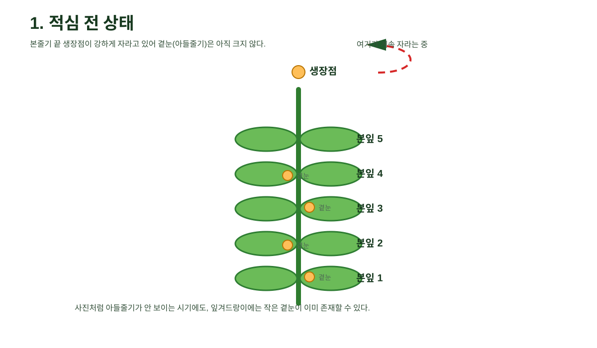
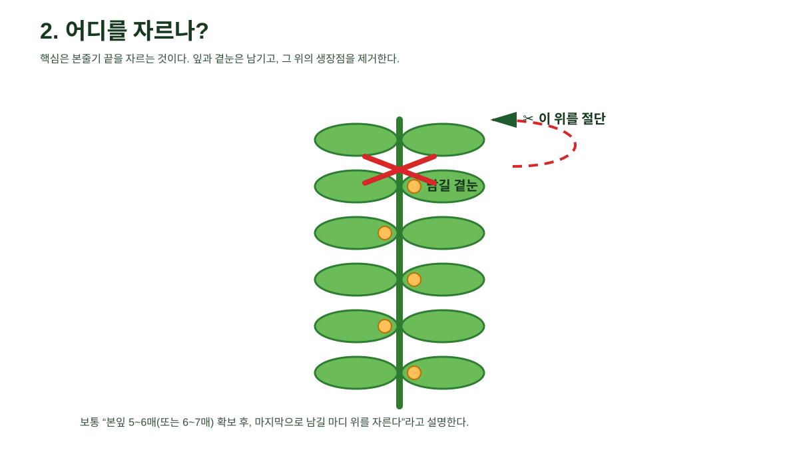
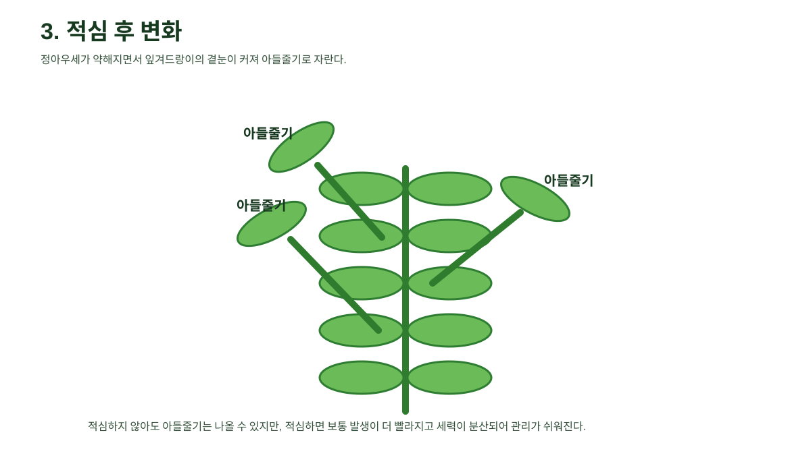

한눈에 보는 핵심 도식

본줄기 끝 생장점을 절단하면 정아우세가 약해지고, 잎겨드랑이의 곁눈이 자라 아들줄기가 된다.
핵심 요약
- 적심 = 본줄기 끝 생장점을 자르는 작업
- 잎과 곁눈은 남기고, 그 위 생장점을 절단
- 적심 후 곁눈이 자라 아들줄기로 발달
- 적심하지 않아도 아들줄기는 나올 수 있으나, 보통 적심 시 더 빨리·강하게 나옴
기억할 문장: 곁눈은 남기고, 그 위 줄기를 자른다.
단계별 도식
1) 적심 전 상태

본줄기가 계속 자라고 있어 곁눈은 작고 눈에 잘 띄지 않을 수 있다.
2) 절단 위치

본잎과 곁눈은 남기고, 그 위 생장점을 절단한다.
3) 적심 후 변화

정아우세가 약해지면서 아들줄기가 자라기 시작한다.
원본 사진 참고

사진상으로는 본줄기 중심으로 자라고 있고, 뚜렷한 아들줄기는 아직 크게 발달하지 않은 초기 상태로 볼 수 있다.
이 채팅 기준 최종 정리
| 질문 | 정리된 답 |
|---|---|
| 아들줄기가 아직 안 나온 건가? | 겉으로 뚜렷하지 않을 수 있으나, 작은 곁눈은 이미 있을 수 있다. |
| 본줄기를 자르면 아들줄기가 나오나? | 적심 후 곁눈이 더 잘 자라 아들줄기로 발달한다. |
| 적심 안 하면 아들줄기가 안 나오나? | 아니며, 늦게라도 나올 수 있다. |
| 수꽃은 제거하나? | 보통 제거하지 않는다. |
포함 파일
- README.md
- index.html
- images/00_적심핵심도식.svg
- images/01_적심전.svg
- images/02_절단위치.svg
- images/03_적심후.svg
- images/04_원본사진_박생육.jpg
- archive-manifest.json
- verification-report.md